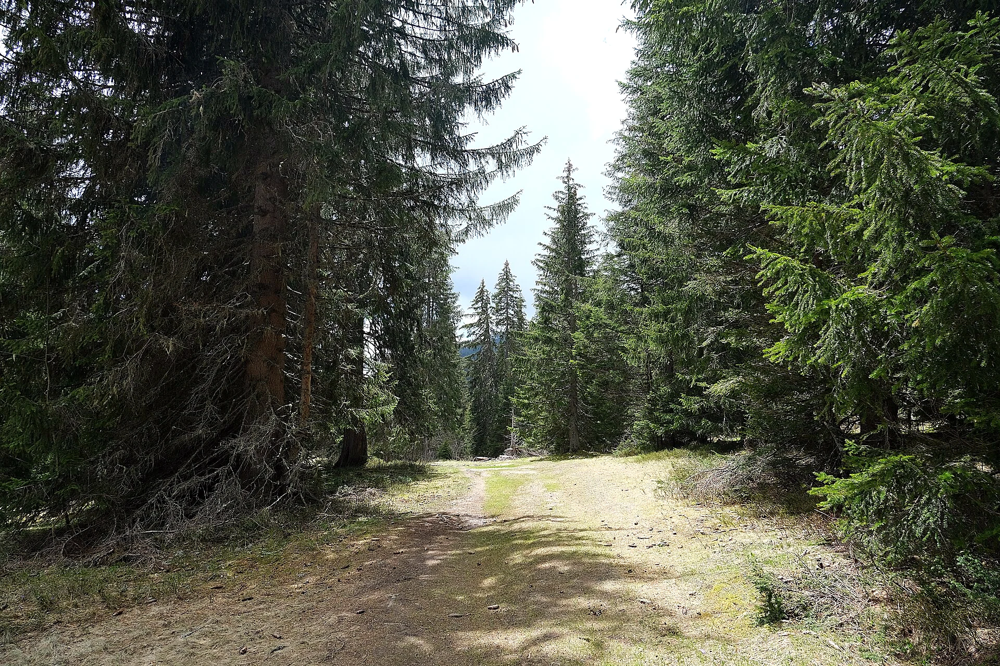

Photo: Guilhem Vellut, CC BY 2.0, via Wikimedia Commons (edited)
The nature-themed twin of the plateau's history walk: an easy wander across the Plateau des Glières at 1,400 m, through flower meadows, conifer stands and past the protected peat bogs, with interpretive panels on the mountain flora and fauna along the way. Gentle gradients and soft ground underfoot make it one of the plateau's most relaxed outings.
Start here: on the plateau path, about 200 m from the col des Glières parking and the Maison du Plateau
Dogs are welcome on the plateau with the leash required, and the alpages are worked from June to September, so expect herds and possibly patou guard dogs; give any flock a wide berth and stay calm around the big white dogs. Keep to the path and boardwalks, since the peat bogs are fragile and protected. Shade comes and goes between the woods and open meadow, and no fountains are mapped, so carry water; the Maison du Plateau near the start has refreshments. One short stretch of the mapped route has a small gap in the source data, so the line briefly straightens; the waymarking on the ground is continuous. In winter the plateau becomes a nordic ski domain.
The trail rating above describes the mountain, and it's the same for every dog. What it can't tell you is how this route pairs with your dog's build, age, and health. Create your dog's free profile and DoloPaws scores every trail against your dog on six real safety factors: terrain, shade, water access, distance, exposure, and heat risk.
Before you go: the dog safety guide · water for dogs on trail · dogs on cable cars · meeting a guardian dog
.jpg){kind=link}